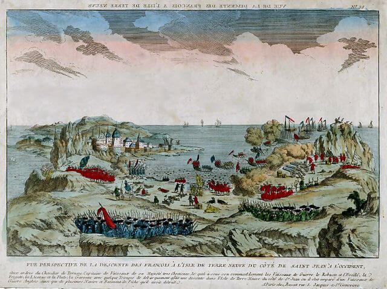

The History of Newfoundland
Early History
Traces of human habitation in Newfoundland go back to around 5,000 years ago, attributed to the Maritime Archaic peoples, who were genetically distinct from the subsequent inhabitants of the island. Starting around 4,000 years ago, those were gradually displaced by people of the Dorset Culture, who appear to have been the descendants of the ancient prehistoric peoples who crossed into the North America from Siberia via the Bering Land Bridge. The Dorset people are believed to have died off or abandoned the island before the arrival of the Norse settlers around 1,000 years ago. Later, the Beothuks, who spoke the now-extinct Beothuk language, have settled on the island, although there is no evidence to suggest they have done so before the arrival of the Norsemen. Even though Beothuks are now considered extinct, some of the modern-day indigenous Innus of Labrador share partial ancestry with them.
The European Exploration
Leif Erikson, an Icelandic explorer, has possibly visited the island in the 11th century, using it as a rest settlement before heading farther south to the land closer to the mouth of the St. Lawrence River. The first confirmed visit was by the Norseman who built temporary base at L'Anse aux Meadows, a Norse settlement near the northernmost tip of Newfoundland (Cape Norman), which has been dated to be approximately 1000 years old. The site is considered the only undisputed evidence of Pre-Columbian contact between the Old and New Worlds not counting the Norse-Inuit contact in Greenland.
The next European visitors to Newfoundland were Portuguese and French fishermen. The island was possibly visited by the Venetian navigator John Cabot (Giovanni Caboto), working under contract to Henry VII of England on his expedition from Bristol in 1497. In 1501 Portuguese brothers Gaspar Corte-Real and Miguel Corte-Real charted part of the coast of Newfoundland in an attempt to find the Northwest Passage.
The British and the French Rule
On 5 August 1583, Humphrey Gilbert claimed Newfoundland as England's first overseas colony under Royal Charter of Queen Elizabeth I. Newfoundland is considered Britain's oldest colony. On 5 July 1610, John Guy set sail from Bristol, England, with 39 other colonists for Cuper's Cove. This, and other early attempts at permanent settlement failed to make a profit for the English investors, but some settlers remained, forming the very earliest modern European population on the island. By 1620, the fishermen of England's West Country dominated the east coast of Newfoundland. French fishermen dominated the island's south coast and Northern Peninsula.
After 1713, with the Treaty of Utrecht, the French ceded control of south and north shores of the island to the British. They kept only the nearby islands of St. Pierre and Miquelon, located in the fish-rich Grand Banks off the south coast. However, in the Seven Years' War (1756-1763), control of Newfoundland became a major source of conflict between Britain, France and Spain who all pressed for a share in the valuable fishery there. In 1762, a French force landed in Newfoundland and initially succeeded in occupying eastern portions of the island including the important port of St. John's. However, French ambitions of conquering the island ended in defeat at the Battle of Signal Hill. By the late 18th century, permanent settlement increased, peaking in the early years of the 19th century.
After the 1783 independence of the thirteen continental colonies that became the United States of America, the remaining continental colonies and the North Atlantic Ocean colony of Bermuda were organised and administered as British North America. All except the Newfoundland Colony and Bermuda confederated in 1867 to form the Dominion of Canada. In 1869 Newfoundland voted against joining Canada.
Brief Independence and Joining Canada
In 1907 Newfoundland would become a Dominion in its own right (the Dominion of Newfoundland). Politically the years from 1916 to 1925 were turbulent, as six successive governments failed, widespread corruption was uncovered, and the postwar boom ended in economic stagnation. In 1927, Britain awarded the vast, almost uninhabited hinterland of Labrador to Newfoundland rather than to Canada, adding potentially valuable new forest, hydroelectric, and mineral resources. Newfoundland's economy collapsed in the 1930s during the Great Depression, as prices plunged for fish, its main export. After the collapse, the responsible government was suspended in 1934, and Newfoundland was governed through the British-controlled Commission of Government. Prosperity and self-confidence returned during the Second World War, as the American money flooded the island during the stationing of the American naval fleet and the building of the military bases. After the intense debate, the people voted to join Canada in 1948. Newfoundland was formally admitted into Canadian Confederation in 1949. St. John's, the province's capital, is the oldest city in Canada and the oldest continuously settled location in English-speaking North America.